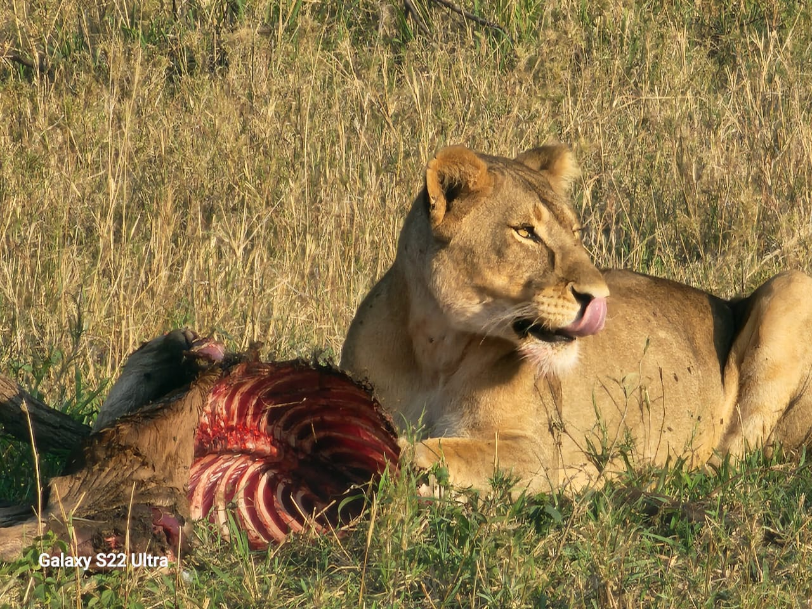
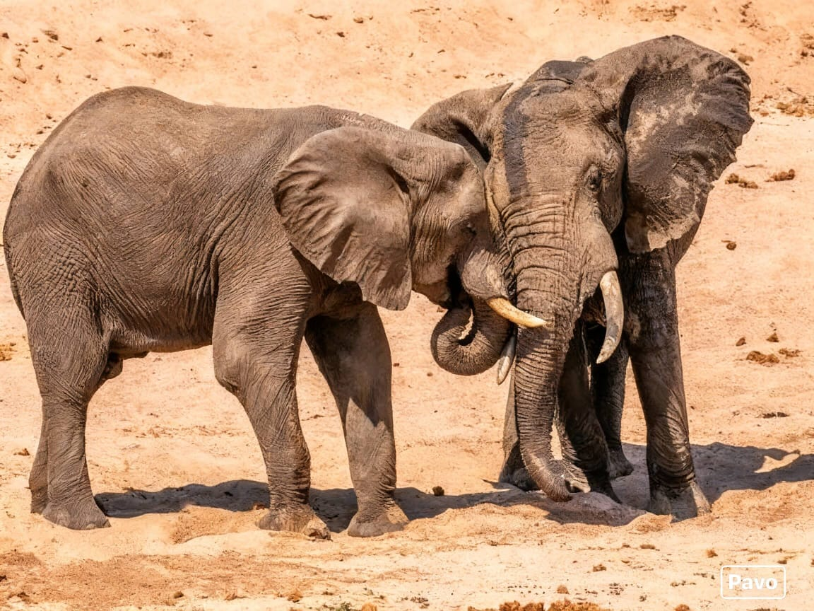
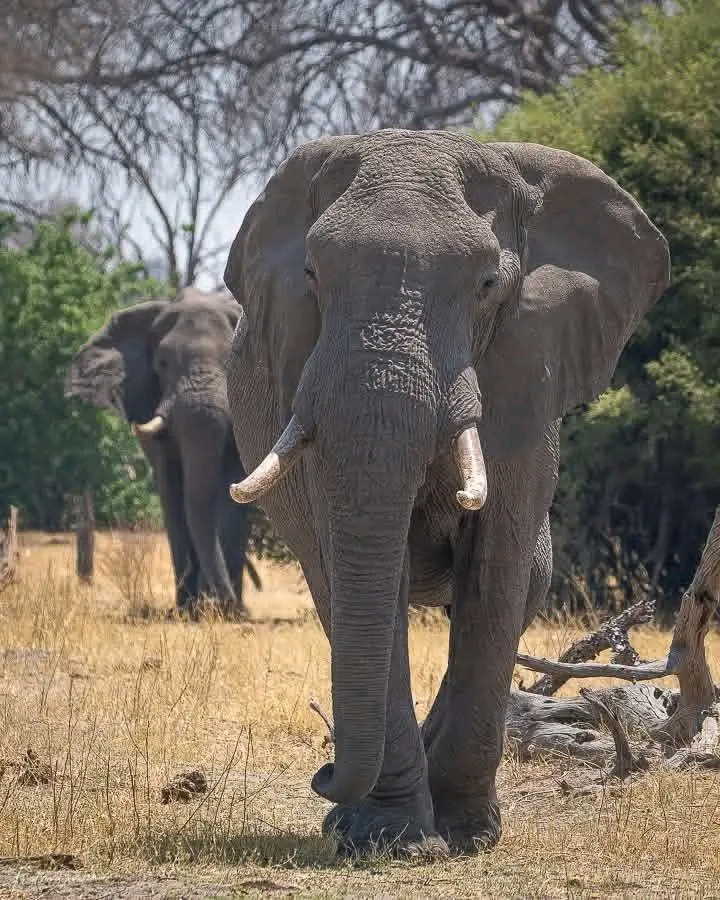

Arusha Distance: 30km / 50km
Met on arrival at Kilimanjaro Airport or Arusha Airport. Transfer to your hotel in Arusha for dinner and overnight HB. (40 km, 30 minutes)
Distance: 130km | Non-game viewing time: 3-4 hrs
After breakfast the tour departs. First stop is Arusha Town for any last minute purchases before we head off on safari. Afterwards we head towards the Tarangire National Park for a game drive with picnic lunch at the park. Tarangire is well known for its huge elephant population and baobab trees. It forms the centre of an annual migratory cycle that includes up to 3000 elephants, 25,000 wildebeest and 30,000 zebras.
Distance: 50km | Non-game viewing time: 2-3 hrs
After breakfast the tour departs. First stop is Arusha Town for any last minute purchases before we head off on safari. Afterwards we head to Lake Manyara. Lake Manyara National Park offers breathtaking views and a large variety of habitats. Acacia woodlands, water forests, baobab strewn cliffs, algae-streaked hot springs, swamps and the lake itself. Manyara has the largest concentration of baboons anywhere in the world and the lions here are also renowned for their tree climbing. Dinner and overnight at Ngorongoro Wildlife Lodge.
Distance: 145km | Non-game viewing time: 3-4 hrs
After breakfast, depart for Serengeti National Park, via the beautiful high lying farmland of Karatu and the Ngorongoro Conservation Area. Leaving the highlands behind, we descend into the heart of wild Africa – the Serengeti National Park – with its endless plains. Then head to the central park area, known as the Seronera area, one of the richest wildlife habitats in the park. Arrive in time for lunch and enjoy an afternoon game drive. Dinner and overnight at Serengeti Tortills Tented Lodge for 2 night.


Full day Serengeti National Park game drive including following the wildebeest migration. Dinner and overnight at Serengeti Seronera Campsite.
Distance: 145km | Non-game viewing time: 2-4 hrs
Early morning game drive and after depart to Ngorongoro Conservation area. We will stopover at Olduvai Gorge, boasting with a history dating back to the dawn of time. It was here, that the anthropologists Drs. Lois and Mary Leakey discovered the skulls of 'Nutcracker Man' and 'Handy Man', both very significant links in the chain of human evolution. Late afternoon transfer to Ngorongoro Wildlife Lodge where you will have dinner and overnight.
Distance: 210km | Non-game viewing time: 3-4 hrs
After an early breakfast, You will descend over 600 meters into the crater to view wildlife. Supported by a year round water supply and fodder, the Ngorongoro conservation Area supports a vast variety of animals, which include herds of wildebeest, zebra, buffalo, eland, warthog, hippo, and giant African elephants. Another big draw card to this picturesque national park, is its dense population of predators, which include lions, hyenas, jackals, cheetahs and the ever-elusive leopard. We will visit Lake Magadi, a large but shallow alkaline lake in the southwestern corner. A large number of flamingos, hippos and other water birds can usually been seen here. Late afternoon transfer to Arusha For dinner and Overnight or airport drop off. (Accommodation can be included upon request at extra cost.)